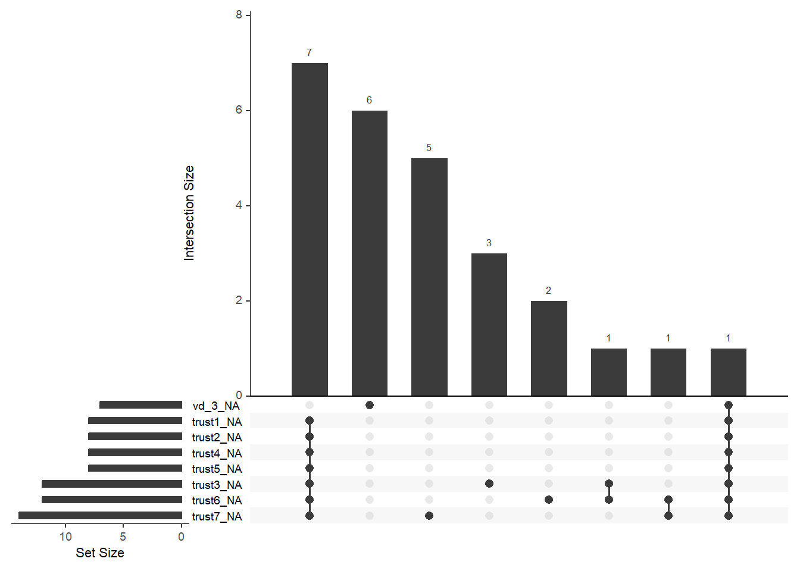
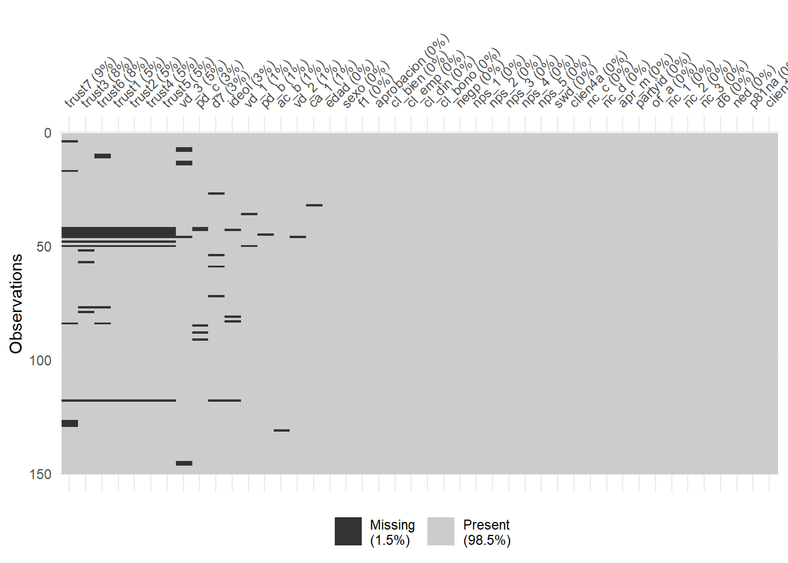

library(tidyverse)
library(readxl)
library(writexl)
library(skimr)
library(kableExtra)
library(forcats)
library(mice)
library(dplyr)
library(ggplot2)
library(naniar)
lapply(c("tidyverse", "readxl", "writexl", "modelsummary", "haven", "janitor", "labelled", "forcats", "stringr"),
library, character.only = TRUE)Tesis_licenciatura
1 Importacion de la base de datos
cdl <- read_xlsx("E:/Bases de datos/datasets_private/Dataset de encuestas.xlsx") %>%
select(-n_case, -duracion, -zona, -estrato, -object, -viatype,
-vianame, -n_vivenda, -nacionalidad, -residencia) %>%
mutate(
across(where(is.character),
~ .x %>%
str_squish() %>% # elimina espacios extra
str_to_lower(locale = "es") %>% # pasa todo a minúsculas
str_to_sentence(locale = "es")) # primera letra en mayúscula
)1.1 Procesamiento de variables categóricas y numéricas
Detectamos cadenas de texto para transformarlas a factor. Luego, nos aseguramos que las variables numéricas sean leídas como tal. Creamos una lista de caracteres que representan el universo de categorías ordinales que existen en la base de datos.
cdl <- cdl %>% mutate(across(where(is.character), as_factor)) %>%
mutate(across(where(is.numeric), as.numeric))# 1. Catálogos de niveles en el orden deseado ------------------------------
niveles <- list(
confianza = c("Nada", "Poco", "Algo", "Mucho"),
estratos = c("Medio", "Medio alto"),
satisfaccion = c("Muy insatisfecho", "Insatisfecho", "Satisfecho", "Muy satisfecho"),
calidad = c("Muy malo", "Malo", "Regular", "Bueno", "Muy bueno"),
acuerdo = c("Muy en desacuerdo", "En desacuerdo","De acuerdo", "Muy de acuerdo"),
aprobacion = c("Lo desaprueba firmemente", "Lo desaprueba", "No aprueba, pero lo entiende", "Solo lo aprueba", "Lo aprueba firmemente"),
sistema = c("A veces un gobierno autoritario es mejor", "En realidad me da igual", "Siempre es preferible la democracia"),
educa = c("Primaria" , "Secundaria", "Superior"))ordenar_factor <- function(x, cat_list = niveles, tol = 0.9) {
# Solo procesa texto / factores
if (!is.character(x) && !is.factor(x)) return(x)
vals <- unique(na.omit(str_squish(as.character(x))))
# Coincidencia completa
idx <- detect_index(cat_list, ~ all(vals %in% .x))
if (idx > 0) {
return(factor(x, levels = cat_list[[idx]], ordered = TRUE))
}
# Coincidencia parcial según 'tol'
idx <- detect_index(cat_list, ~ mean(vals %in% .x) >= tol)
if (idx > 0) {
return(factor(x, levels = cat_list[[idx]], ordered = TRUE))
}
x # No se encontró catálogo adecuado
}# Aplicación en todo el data-frame
cdl <- cdl %>% mutate(across(where(~ is.character(.x) | is.factor(.x)), ordenar_factor))skimr::skim(cdl) %>% as_tibble()2 Análisis e imputación de valors perdidos
# 1a. Resumen general
naniar::miss_var_summary(cdl) %>% as_tibble()# % de NA por variable
naniar::gg_miss_upset(cdl, nsets = 8)
# patrones conjuntos
vis_miss(cdl, sort_miss = TRUE) # mapa de calor
# 1b. Prueba MCAR (Little)
mcar_test <- naniar::mcar_test(cdl)
mcar_test %>% as_tibble()3 Seleccion de variablesa imputar
4 ── 1. Vector con los ítems de confianza (trust_*) ──────────────────────────
vars_trust <- names(cdl) %>% str_subset(“(?i)^trust”)# (?i) = búsqueda sin distinción de mayúsculas
5 ── 2. Resto de variables ordinales (excluye las trust) ─────────────────────
vars_ordinal <- names(cdl)[sapply(cdl, is.ordered)] |> setdiff(vars_trust)
6 ── 3. Variables nominales (factor sin orden) ───────────────────────────────
vars_nominal <- names(cdl)[sapply(cdl, (x) is.factor(x) && !is.ordered(x))]
7 ── 4. Variables numéricas ──────────────────────────────────────────────────
vars_numeric <- names(cdl)[sapply(cdl, is.numeric)]
8 2. Vector de métodos
imp_vars <- c(vars_trust, vars_ordinal, vars_nominal, vars_numeric) method <- make.method(cdl[imp_vars])
method[vars_numeric] <- “pmm” method[c(vars_trust, vars_ordinal)] <- “polr” method[vars_nominal] <- if_else( sapply(cdl[vars_nominal], nlevels) == 2, “logreg”, “polyreg”)